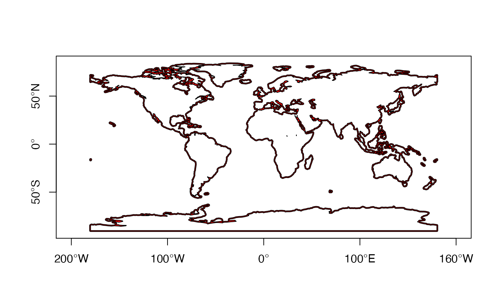
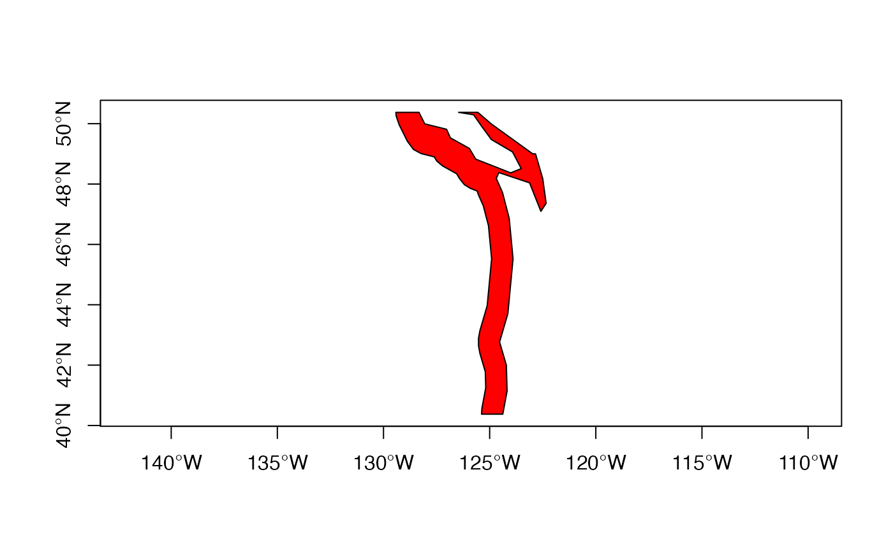
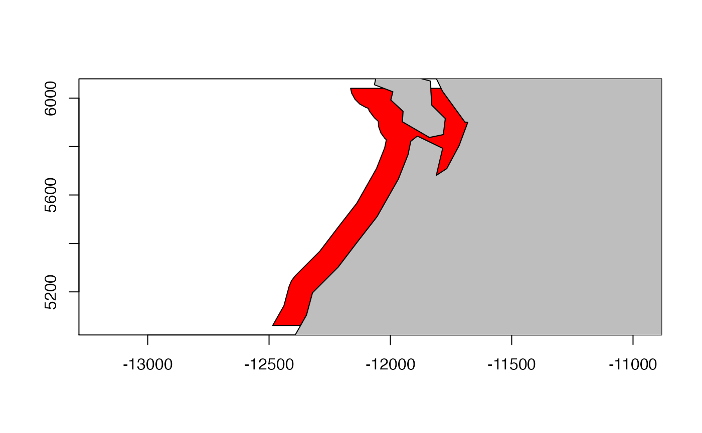
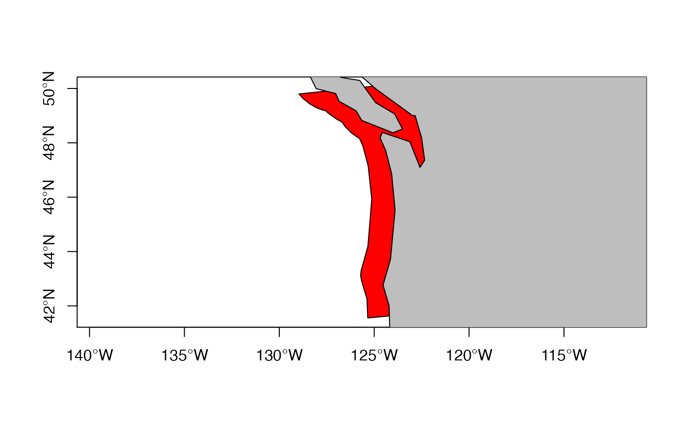
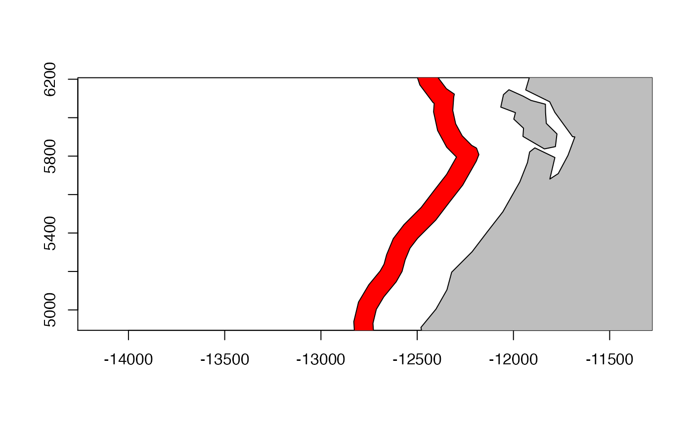
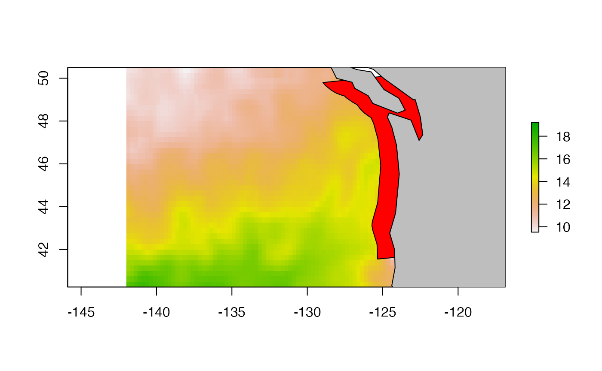
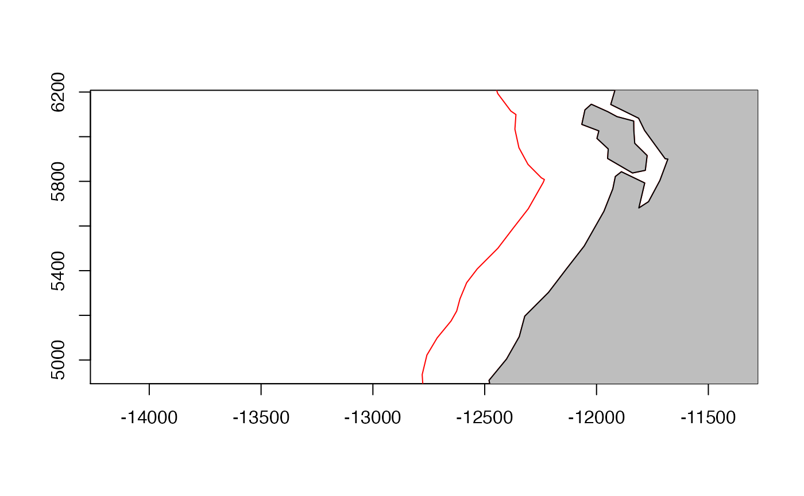

This example shows how to prepare a region that is parallel to the coastline. Once this is created, you can do geometric calculations in that area, like mean Chl-a.
Load the sample data.
data("sample_raster", package="basics")
df <- sample_raster$df
ras <- sample_raster$raster
lons <- sample_raster$lons
lats <- sample_raster$latsLoad the needed packages for plotting.
## Loading required package: raster## Loading required package: sp## Loading required package: ggplot2Download the world coastlines
For this buffer, I am using a fairly zoomed out version of the coastline. You could use the coastline from rnaturalearth.
world <- rnaturalearth::ne_countries(scale = "small", returnclass = "sp")
world <- rgeos::gUnaryUnion(world)Add a buffer area
Here we add a buffer but it is hard to see at the world scale.
buff1 <- raster::buffer(world, width = 1, dissolve = TRUE)
e<-erase(buff1, world)
plot(e, col="red", axes=TRUE)
Let’s zoom in a bit.
 One issue is that the units of the width are unclear. The help file for buffer() says that the units are meters when +proj=longlat as it is for world, but that is clearly not the case. The help file further implies that if the object is a SpatialPolygon, as it is in this case, the buffer is computed using rgeos. This would imply that rgeos::gBuffer() is used. But the rgeos::gBuffer() help file has no information on the units of width. The distance appears to be in units of degree, and poking into the code for .pointsBuffer() (here by searching on google), indicates that it sets longlat = FALSE if the data are lines or a polygon (not points). If longlat=FALSE then it uses units of degree. Units of degree are quite useless since this will not be area or distance uniform as we move around the map (north to south) or as our buffer rotates (from N-S to E-W).
How to do this? Looking at the raster::buffer() source code, it is clear that that function always uses units of degrees if the object is an sp object and not points. So let’s try rgeos::gBuffer(). The help file is equally useless here regarding the units.
Here’s the workflow:
world is in long-lat which is just x-y with longitude on x-axis and latitude on y-axis. Ok for plotting but in that x-y plane, 1-degree will have different kms in different places. We need to convert to a projection with meters. There are many we could use. Winkel tripel projection is a fairly standard one which is a compromise projection to preserve distance, area, and direction.
- Define our projection string.
"+proj=wintrimeans Winkel tripel projection. Thelon_0andlat_1where it is centered. Let’s keep at 0.x_0andy_0is the axis origin in the meters scale. We can ignore that too.unitsshould bemorkm. - Change the
worldto this projection. - Calculate the buffer with that. Now it will use km as the unit.
- Get rid of the world polygon from our buffer so our buffer is just the buffer.
- Transform our buffer back to longlat so it is easier to plot and add to our raster plots.
# Step 1
newcrs <- "+proj=wintri +lon_0=0 +lat_1=0 +x_0=0 +y_0=0 +datum=WGS84 +units=km +no_defs"
# Step 2
x <- sp::spTransform(world, newcrs)
# Step 3
buff1 <- rgeos::gBuffer(x, width = 100)
e<-raster::erase(buff1, x)It’ll be helpful to have lons and lats in these new coordinates so we can crop.
mpts <- SpatialPoints(cbind(lons, lats), proj4string=CRS("+proj=longlat"))
mpts <- sp::spTransform(mpts, newcrs)Now we can plot as before:
crop_e <- raster::crop(e, raster::extent(mpts))
plot(crop_e, col="red", axes=TRUE)
plot(x, add=TRUE, col="grey")
plot(sp::spTransform(crop_e, crs(world)), axes=TRUE, col="red")
plot(world, add=TRUE, col="grey")
Create a buffer that is a band offshore
Let’s create a 100km wide buffer that is 250 to 350 km offshore. 250 km is about 3 degrees longitude offshore at 40 degrees latitude (here is a calculator).
# Step 1
newcrs <- "+proj=wintri +lon_0=0 +lat_1=0 +x_0=0 +y_0=0 +datum=WGS84 +units=km +no_defs"
# Step 2
x <- sp::spTransform(world, newcrs)
# Step 3
buff1 <- rgeos::gBuffer(x, width = 350, byid=TRUE)
buff2 <- rgeos::gBuffer(x, width = 250, byid=TRUE)
e<-raster::erase(buff1, buff2)Now we can plot as before:

Add the SST raster to this
plot(ras)
plot(sp::spTransform(crop_e, crs(world)), axes=TRUE, col="red", add=TRUE)
plot(world, add=TRUE, col="grey")
Create a line around the world’s coastlines at 300 km offshore
# Step 1
newcrs <- "+proj=wintri +lon_0=0 +lat_1=0 +x_0=0 +y_0=0 +datum=WGS84 +units=km +no_defs"
# Step 2
x <- sp::spTransform(world, newcrs)
# Step 3
buff1 <- rgeos::gBuffer(x, width = 300, byid=TRUE)
e<-raster::erase(buff1, x)If we wanted to get rid of the interior coastlines, we could use the remove.holes() function from spatialEco.
nohole_e <- spatialEco::remove.holes(spatialEco::remove.holes(e))## Warning in sp::proj4string(x): CRS object has comment, which is lost in output
## Warning in sp::proj4string(x): CRS object has comment, which is lost in outputNow we can plot as before and the holes that would be removed are the red lines.

plot(e, border="red", axes=TRUE, xlim=mpts@bbox[1,], ylim=mpts@bbox[2,])
plot(x, add=TRUE, col="grey")